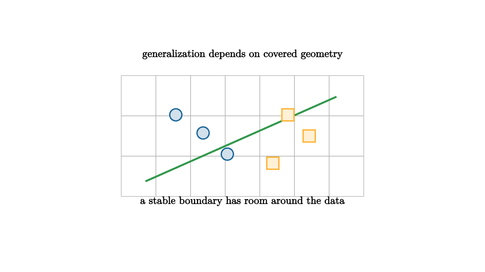

Training performance answers one question: how well did the model fit examples it already saw? Generalization asks a harder question: how well will the learned rule behave on new examples drawn from the same world? This is where geometry and data meet.
The training risk is an average over observed examples:
The population risk is the average over the full data-generating process:
Generalization is the gap between those two quantities.

source
let soft = |col, amount| lerp(WHITE, col, amount)
mesh generalization = [
center{1.35u} Text("generalization depends on covered geometry", 0.62),
stroke{LIGHT_GRAY, 1} LineGrid([-2, 2, 8], [-1, 1, 4], 1),
stroke{GREEN, 3} Line(1.6l + 0.75d, 1.55r + 0.65u),
center{1.1l + 0.35u} fill{soft(BLUE, 0.2)} stroke{BLUE, 2} Circle(0.1),
center{0.65l + 0.05u} fill{soft(BLUE, 0.2)} stroke{BLUE, 2} Circle(0.1),
center{0.25l + 0.3d} fill{soft(BLUE, 0.2)} stroke{BLUE, 2} Circle(0.1),
center{0.75r + 0.35u} fill{soft(ORANGE, 0.2)} stroke{ORANGE, 2} Square(0.2),
center{1.1r + 0.0u} fill{soft(ORANGE, 0.2)} stroke{ORANGE, 2} Square(0.2),
center{0.5r + 0.45d} fill{soft(ORANGE, 0.2)} stroke{ORANGE, 2} Square(0.2),
center{1.08d} Text("a stable boundary has room around the data", 0.62)
]Margins give the cleanest geometric picture. If a classifier separates classes with a wide margin, small perturbations in the input are less likely to change predictions. This makes the learned boundary less sensitive to measurement noise. Support vector machines turn this idea into an optimization problem, while neural networks often use margins implicitly through representation and loss shape.
source
let soft = |col, amount| lerp(WHITE, col, amount)
"Memorized"
mesh scene = [
center{1.3u} Text("a fragile boundary can fit the sample", 0.62),
center{1.1l + 0.35u} fill{soft(BLUE, 0.2)} stroke{BLUE, 2} Circle(0.1),
center{0.25l + 0.05d} fill{soft(BLUE, 0.2)} stroke{BLUE, 2} Circle(0.1),
center{0.75r + 0.35u} fill{soft(ORANGE, 0.2)} stroke{ORANGE, 2} Square(0.2),
center{1.05r + 0.2d} fill{soft(ORANGE, 0.2)} stroke{ORANGE, 2} Square(0.2),
stroke{RED, 3} Polyline([1.45l + 0.8d, 0.75l + 0.4u, 0.15l + 0.2d, 0.55r + 0.45u, 1.35r + 0.75d])
]
play Write(0.9)
"Margin"
scene = [
center{1.3u} Text("a wide margin gives new points more room", 0.62),
stroke{GREEN, 3} Line(1.4l + 0.65d, 1.4r + 0.65u),
stroke{LIGHT_GRAY, 2} Line(1.25l + 0.45d, 1.55r + 0.85u),
stroke{LIGHT_GRAY, 2} Line(1.55l + 0.85d, 1.25r + 0.45u)
]
play Trans(0.8)
"Coverage"
scene = [
center{1.3u} Text("data must cover the cases we care about", 0.62),
center{0.8l + 0.1u} fill{soft(BLUE, 0.14)} stroke{BLUE, 2} Circle(0.55),
center{0.95r + 0.15d} fill{soft(ORANGE, 0.14)} stroke{ORANGE, 2} Circle(0.55),
stroke{RED, 3} Arrow(0.1r + 0.75d, 0.1r + 0.05d)
]
play Trans(0.8)Data coverage is the other half. A model trained on sunny street images may struggle in snow. A medical model trained on one hospital may fail at another with different equipment or patient demographics. In geometry terms, the training data covers part of the input space. Generalization is strongest near the covered regions and weaker in gaps.
Capacity matters because a highly flexible model can draw many possible boundaries through the same data. Regularization, early stopping, architectural choices, and data augmentation reduce the set of plausible rules. More data narrows uncertainty by showing which rules survive more examples.
The bias-variance tradeoff is another way to say this. A high-bias model has a restricted shape and may miss the real pattern. A high-variance model can adapt too strongly to the sample. Good generalization comes from matching the geometry of the model to the geometry of the problem with enough data to anchor the fit.
Evaluation is part of the geometry. A random train-test split estimates performance when future data resembles past data. A time-based split tests future forecasting. A group split tests whether the model handles new users, patients, schools, or devices. The split should match the way the model will be used.
The final lesson of the series is that machine learning is not magic hidden inside algorithms. Nearest neighbors need meaningful distance. Linear models need useful coordinates. Kernels change dot products. Trees carve regions. Networks compose bends. Optimization follows local slope. Generalization asks whether the learned shape is stable in the parts of the world the data actually represents.